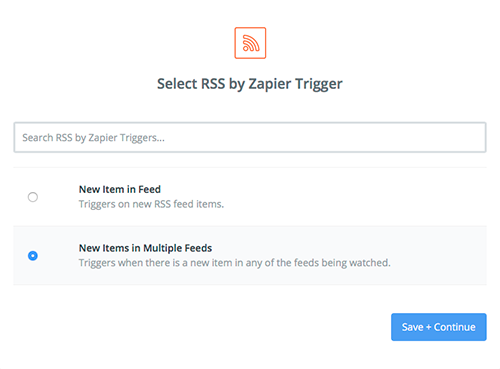
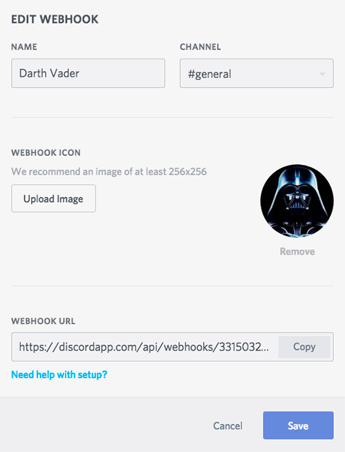
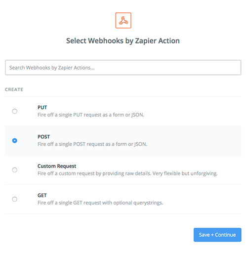
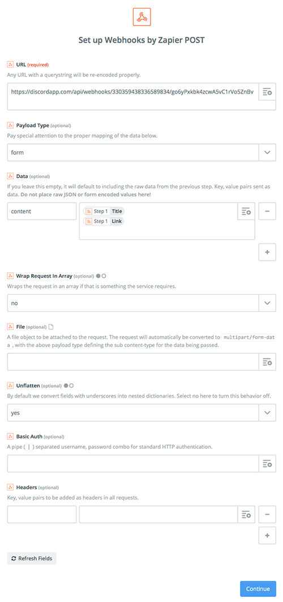
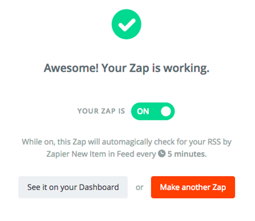

This tutorial will explain how to set it up so that official SWGOH game updates will be automatically posted to a channel of your choice on your Discord server.
Create a free account at Zapier.com. Zapier allows you to connect different web sites and automate certain actions. We will set it up to monitor the official SWGOH forums and when an official game update is posted, Zapier will push this into a channel on your Discord Server.
Click the "Make a Zap" button and on the "Choose a Trigger" page, select "RSS by Zapier". Click the "show less common options" link and select the "Multiple Feeds" option.
Enter the following two URLs:
From the "What Triggers a New Feed Item" section you have a choice:
Select "continue" and it should test it and give you a success screen.
You must have Admin Privileges to your Discord Server. This step won't work from a mobile client, so you'll need to use a desktop client or be signed into the Discord website. Select "Server Settings" from the menu in your Discord Server. Select the "Webhooks" option and then click the "Create Webhook" button. This will be the "user" who appears to be posting the news, so give it a clever name and avatar (this can be done later). Select the channel that you want the automatic posts to go into. Copy the "Webhook URL" and save your changes.
Back on Zapier.com, for the "Choose an Action App" page, select "Webhooks by Zapier" and then select "POST".
Copy and paste the Webhook URL from step 3 into the field at the top. For the "Data" field, enter "content" in the left box and setup the right box to look like the image below. All the other fields can be left at the default settings.
The next page should give you the option of testing the Zap. If all goes well, you should get a notification in Discord with the last developer update that was posted. If you get an error, go back and make sure you setup step 4 correctly. Make sure you turn this Zap on, and your done!
SWGOH.GG is not affiliated with EA, EA Capital Games, Disney or Lucasfilm LTD.